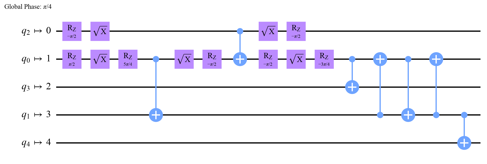

global phase: π/4 ┌─────────┐┌────┐┌─────────┐ q: ┤ Rz(π/2) ├┤ √X ├┤ Rz(π/2) ├ └─────────┘└────┘└─────────┘ same gate (up to a global phase): True
Quantum Computing
 about 12 min
about 12 min qc-w6d4.ipynb
qc-w6d4.ipynb
From circuit to chip: transpilation
Real chips speak only a few gates, and only neighbors can talk. Watch a circuit get translated, placed and routed, and see what that costs in noise.
In this lesson you will
- Name the two limits of a chip: native gates and connectivity (the coupling map)
- Explain the transpiler's steps: translate, place (layout), route with SWAPs, optimize
- Compare circuits before and after, and connect extra CNOTs to extra noise
Warm-up
1 minThe circuit you draw is not the circuit that runs

All term you've drawn circuits with any gate on any qubits. A real chip is pickier: it knows a handful of gates, and its qubits sit on a fixed map where only neighbors can do a CNOT. Before your circuit runs, a program called the transpiler rewrites it. Knowing what it does explains why your results on hardware get noisier than your circuit suggests.
Big idea
4 minTranslate, place, route, tidy up
A chip has two kinds of limits:
- Native gates. IBM chips offer , , and one two-qubit gate (such as CNOT or CZ). Every other gate is built from these: H becomes . The gates are "virtual", done by shifting later pulses, so they're free; is cheap; the two-qubit gate is the expensive one, with roughly ten times the error.
- Connectivity. The coupling map lists which pairs of physical qubits can do a two-qubit gate: often a line, a grid or a "heavy hexagon", never everything with everything.
The transpiler works in stages:
- Translate every gate into native gates.
- Place (layout): decide which physical qubit holds each of your qubits.
- Route: when a CNOT's qubits aren't neighbors, insert SWAP gates to move them together. One SWAP costs three CNOTs.
- Optimize: cancel gates that undo each other and merge rotations. Higher optimization levels (0 to 3) search harder.
Why it matters: every extra CNOT lets in noise (Monday's exercise). A circuit that needs many SWAPs can lose much of its accuracy before it even starts. Good placement, and circuits designed for the chip's map, make a real difference.
The transpiler fits your circuit to the chip: native gates, a placement, SWAPs for distant pairs, and cleanup. Every SWAP is three more chances for noise.
Play
4 minThe routing puzzle
Place the logical qubits a–e on the chip (tap two chip qubits to swap them). The router adds SWAPs wherever a CNOT's qubits aren't neighbors; the readouts count the cost.
Try this
On the T-shaped chip, the GHZ star needs qubit a to talk to everyone: where should a sit? Find a layout with only one SWAP. Then switch to "every pair": no layout avoids SWAPs, and on a ring it gets cheaper. Chip designers face exactly this trade-off.
Code
2 minTranspiling in Qiskit
The notebook for this lessonEvery code cell below, with what it printed, is in
qc-w6d4.ipynb. To change the code and run it yourself, open the notebook in Google Colab (free, in your browser) or download it for your own Jupyter.import itertools
import numpy as np
from qiskit import QuantumCircuit, transpile
from qiskit.quantum_info import Operator
from qiskit.providers.fake_provider import GenericBackendV2
from qiskit.transpiler import CouplingMap
h_only = QuantumCircuit(1)
h_only.h(0)
native = transpile(h_only, basis_gates=["rz", "sx", "x", "cx"])
print(native.draw("text"))
print("same gate (up to a global phase):", Operator(h_only).equiv(Operator(native)))What it printed in the notebook
tee = CouplingMap([[0, 1], [1, 2], [1, 3], [3, 4]])
tee.make_symmetric()
chip = GenericBackendV2(num_qubits=5, coupling_map=tee, basis_gates=["cx", "rz", "sx", "x"], seed=1)
star = QuantumCircuit(5) # a GHZ state made with CNOTs from qubit 0 to everyone
star.h(0)
for target in range(1, 5):
star.cx(0, target)
for level in [0, 3]:
routed = transpile(star, chip, optimization_level=level, seed_transpiler=1)
print(f"optimization level {level}: {routed.count_ops().get('cx', 0)} CNOTs (the circuit has 4), depth {routed.depth()}")
transpile(star, chip, optimization_level=3, seed_transpiler=1).draw("mpl", style="clifford", fold=-1, idle_wires=False)What it printed in the notebook
optimization level 0: 10 CNOTs (the circuit has 4), depth 13 optimization level 3: 7 CNOTs (the circuit has 4), depth 15

from qiskit_aer import AerSimulator
from qiskit_aer.noise import NoiseModel, depolarizing_error
noise = NoiseModel()
noise.add_all_qubit_quantum_error(depolarizing_error(0.01, 2), ["cx"])
sim = AerSimulator(noise_model=noise)
measured = star.copy()
measured.measure_all()
for name, circuit in [("all-to-all chip (no SWAPs)", transpile(measured, sim, optimization_level=0)),
("T-shaped chip, level 0", transpile(measured, chip, optimization_level=0, seed_transpiler=1)),
("T-shaped chip, level 3", transpile(measured, chip, optimization_level=3, seed_transpiler=1))]:
counts = sim.run(circuit, shots=8000, seed_simulator=2).result().get_counts()
good = (counts.get("00000", 0) + counts.get("11111", 0)) / 8000
print(f"{name:28s}: {circuit.count_ops().get('cx', 0):2d} CNOTs, correct outcomes {good:.3f}")What it printed in the notebook
all-to-all chip (no SWAPs) : 4 CNOTs, correct outcomes 0.974 T-shaped chip, level 0 : 10 CNOTs, correct outcomes 0.939 T-shaped chip, level 3 : 7 CNOTs, correct outcomes 0.952
Your turn
2 minYour turn: place the qubits yourself
Transpile a chain of CNOTs onto the T-shaped chip from each of the 120 possible starting layouts. What's the fewest CNOTs? Does the transpiler's automatic choice find it?
chain = QuantumCircuit(5)
chain.h(0)
for q in range(4):
chain.cx(q, q + 1)
counts = {}
for perm in itertools.permutations(range(5)):
counts[perm] = 0 # TODO: transpile(chain, chip, initial_layout=list(perm), optimization_level=1,
# seed_transpiler=1), then .count_ops().get("cx", 0)
print("fewest CNOTs:", min(counts.values()))Need a hint?
transpile(chain, chip, initial_layout=list(perm), optimization_level=1, seed_transpiler=1).count_ops().get("cx", 0) counts the CNOTs for one layout.
Show a solution
chain = QuantumCircuit(5)
chain.h(0)
for q in range(4):
chain.cx(q, q + 1)
counts = {}
for perm in itertools.permutations(range(5)):
routed = transpile(chain, chip, initial_layout=list(perm), optimization_level=1, seed_transpiler=1)
counts[perm] = routed.count_ops().get("cx", 0)
best = min(counts.values())
print(f"fewest CNOTs over all 120 layouts: {best} (the chain has 4); worst: {max(counts.values())}")
print("best layouts:", [p for p, c in counts.items() if c == best])
auto = transpile(chain, chip, optimization_level=3, seed_transpiler=1)
print(f"the transpiler's own choice at level 3: {auto.count_ops().get('cx', 0)} CNOTs")
print("A chain of 5 doesn't fit on a T without a detour, and smart placement matters a lot. Automatic layout")
print("is a heuristic: good, not always the best.")What it printed in the notebook
fewest CNOTs over all 120 layouts: 5 (the chain has 4); worst: 16 best layouts: [(0, 1, 2, 3, 4), (2, 1, 0, 3, 4), (4, 3, 1, 0, 2), (4, 3, 1, 2, 0)] the transpiler's own choice at level 3: 7 CNOTs A chain of 5 doesn't fit on a T without a detour, and smart placement matters a lot. Automatic layout is a heuristic: good, not always the best.
Check yourself
1 minQuick check
Question 1 of 3
Your circuit has a CNOT between two qubits that aren't neighbors on the chip. What does the transpiler do?
Question 2 of 3
Why are gates almost free on IBM hardware?
Question 3 of 3
A circuit needs 10 CNOTs after routing instead of 4. If each CNOT fails with probability 1%, roughly how much less likely is an error-free run?
Wrap-up
1 minToday in one sentence
Quantum link
Quantum ML circuits often entangle "every pair" of qubits, which is the most expensive pattern to route. That's why hardware-friendly designs entangle only neighbors on the chip's map (a "hardware-efficient ansatz"): fewer SWAPs, less noise, at the price of less flexible circuits.
Go deeper (optional)
The Qiskit documentation's "Transpile" guides describe each stage and the optimization levels in detail. IBM Quantum Learning's course Utility-scale quantum computing shows what transpilation does to real circuits on 100-qubit chips.
Next in Quantum Computing: the week 6 project, simulating noise and fighting back with error mitigation.

That's the lesson!
Tap the button to save it. Short and steady wins.
Marked by mistake? Undo